Prerequisites
Down below are listed the prerequisites for a successful installation of Nanocloud.
- You need a Linux server, no matter the distribution, although we highly recommend Ubuntu or Debian.
- Login through ssh on the Linux machine.
- Install vim, git and curl with the following command:
sudo apt-get update
sudo apt-get install -y vim git curl- Install Docker Compose 1.8.0 with the following commands:
curl -fsSL https://get.docker.com/ | sudo sh
curl -L https://github.com/docker/compose/releases/download/1.8.0/docker-compose-$(uname -s)-$(uname -m) > docker-compose
sudo cp docker-compose /usr/local/bin/docker-compose
sudo chmod +x /usr/local/bin/docker-compose- Add the user to the Docker group, with the following command:
sudo usermod -aG docker Otherwise, the group change will not be taken into account.
Start the installation
The first part of the installation guides you from the downloading of Nanocloud's sources, to the choice of the version. It is mandatory.
- Download Nanocloud's sources with the following command.
git clone https://github.com/Nanocloud/nanocloud.git- Go into the nanocloud folder.
- Use the following command to obtain the list of all available versions:
git tag- Use the following command to choose the version you want:
git checkout If you want, you can use the following command to verify the version that you have chosen.
git statusNow, you can continue the installation by configuring user and team storage if you need to. If you do not, and in the case of an installation for 15+ users, follow the procedure of this page. If you do not either, directly go to the next mandatory step of the installation, which is to configure Nanocloud.
Optional storage configurations
The second part of the installation is optional. It allows you to configure user storage and team storage.
At this point, you should have:
- Followed the prerequisites.
- Followed the steps of the first part of the installation.
You can now follow the steps below to configure user and/or team storages in Nanocloud!
User storage
You need to figure out whether you need and want to create another VM. You can use the original VM for the User Storage or you can create another VM dedicated to User Storage only. If you do not need or want to create another VM, simply skip this procedure.
If you need or want to create another VM, dedicated to User Storage only:
- Create a new machine.
- Provision your machine.
- Follow the steps of Prerequisites.
- Clone Nanocloud's repository.
- Use the commands below:
docker-compose build plaza && docker-compose up -d plaza
docker-compose up -d storageTeam storage
If you have already created a new machine and dedicated it to User Storage, please keep in mind that you cannot use that same machine for Team Storage. They must be in two separate machines.
You need to figure out whether you want to enable the creation of teams or not. If you enable the creation of teams, you will need to create another VM entirely dedicated to Team Storage. If you do not want to enable the creation of teams, simply skip this procedure.
To enable the creation of teams, by creating another VM dedicated to Teams Storage:
- Create a new machine.
- Provision your machine.
- Follow the steps of Prerequisites.
- Clone Nanocloud's repository
- Use the commands below:
docker-compose -f docker-compose-extra.yml build && docker-compose -f docker-compose-extra.yml up -d plaza
docker-compose -f docker-compose-extra.yml up -d storage-teamNow, continue the installation. If you install Nanocloud for more than 15 users, click here. If you do not, directly go to the step after that, which is mandatory, to configure Nanocloud.
Configuration for 15+ users
The third part of the installation guides you to prepare Nanocloud to support 15+ users. It is only mandatory for those who need to install Nanocloud for 15+ users.
At this point, you should have:
- Followed the prerequisites.
- Followed the steps of the first part of the installation.
- (optional) Configured the storages.
You can now follow the steps below to configure Nanocloud in order to enable it to support 15+ users!
Obviously, if less than 15 users will use Nanocloud, you can skip this procedure and directly go to the next step, which is mandatory: configure Nanocloud.
Launching of the Video Engine Server container
Use the following command to launch the Video Engine Server:
docker-compose -f docker-compose-dev.yml up -d guacdThe listening port will be 4822. To verify that the Video Engine Server container is listening on port 4822, use the following command:
netstat -aptnRepeat these steps each time you create a new VM dedicated to Video Engine Server. Keep in mind that each new VM can support approximately 15 users. Therefore, you must follow the procedure above each time you want Nanocloud to be able to support approximately 15 more users.
Creation of the Load Balancer on AWS
For Nanocloud to be able to communicate with all your VMs, you need to create a load balancer on AWS.
- In the AWS website, select Services > EC2.
- In the Load Balancing section, click on Load Balancer.
- Click on the "Create load balancer" button.
- Choose to create a "Classic Load Balancer". Go to the next step.
- Fill in the fields to create your load balancer:
- enter a name of your choice
- choose a VPC
- select the option "Create an internal load balancer"
- in the table, enter the value of the correct port, which is "4822"
Go the next step.
- Add a security group. Go to the next step.
- To configure the health check, you just have to leave all the default values. Go to the next step.
- Add the EC2 instances, for the load balancer to communicate with the right VMs. Go to the next step.
- Add tags, which means that you can choose a name for your load balancer.
To verify that the creation of the load balancer was successful:
- In AWS, select Load Balancer > Instance.
- Check that the status indicates "InService". If that is what is written, the creation of the load balancer was successful.
Now, click here to go to the next step, which is mandatory: configure Nanocloud!
Configure Nanocloud
The fourth part of the installation of Nanocloud displays the different variables that you may need to configure Nanocloud. It is mandatory.
At this point, you should have:
- Followed the prerequisites.
- Followed the steps of the first part of the installation.
- (optional) Configured the storages.
- (optional) Configured Nanocloud to support 15+ users.
You can now follow the steps below to configure Nanocloud!
Edit the file config.env, which you will find in the Nanocloud directory. All the variables to configure are listed and explained down below.
Please note that the comments in the variables below are just here to explain you how each variable works. However, your must delete every comment when configuring the file config.env!
Variables for the whole installation
IAAS=aws # MANDATORY VARIABLE - Choose between "manual", "aws" and "openstack"
HOST=localhost # MANDATORY VARIABLE (USED FOR SELF-REGISTRATION) - Defaults to localhost - Enter Nanocloud's IP or Nanocloud's domain name
EXPIRATION_DATE=30 # Defaults to 0 (deactivated) - Choose the default number of days before user account expiration
AUTO_REGISTER=true # Defaults to "false" - Choose if users can register themselves ("true") or not ("false")
DEFAULT_GROUP=2b35335b-a71b-4f36-bf27-427f9f8caaef # Defaults to empty string (no default group) - This variable depends on the AUTO_REGISTER one - Enter the UID of the default group for self-registered users
AUTO_LOGOFF=false # Defaults to "false" - Choose if you want VDI sessions to automatically sign off when the user leaves the VDI ("true") or not ("false")
MACHINE_POOL_SIZE=5 # Defaults to 1 - Choose the number of machines to provision in advance for users
MACHINES_NAME=Nanocloud Exec Server # Defaults to "Nanocloud Exec Server" - Choose a name for the machines
PLAZA_URI=https://s3-eu-west-1.amazonaws.com/nanocloud/plaza/1.0.0/windows/amd64/plaza.exe # Defaults to https://s3-eu-west-1.amazonaws.com/nanocloud/plaza/1.0.0/windows/amd64/plaza.exe - Choose a URL to download plaza from
PLAZA_PORT=9090 # Defaults to 9090 - Enter the port to communicate with plazaSMTP configuration
These variables are only relevant for two features: reset password and auto-registration.
SMTP_SERVER_HOST=smtp.nanocloud.com # Choose a host to send emails - IP or domain name
SMTP_SERVER_PORT=25 # Defaults to 25 - Enter the port for the SMTP server
SMTP_LOGIN=Username # Enter the login for the SMTP server
SMTP_PASSWORD=Password # Enter a password for the SMTP server
SMTP_SEND_FROM=mail@nanocloud.com # Defaults to mail@nanocloud.com - Enter the email address of Nanocloud's senderLook and Feel
TITLE=Nanocloud # Defaults to "Nanocloud" - Choose a page title
FAV_ICON_PATH=favicon.ico # Defaults to favicon.ico - Enter a relative path from `assets/dist`
LOGO_PATH=`/assets/images/logo.png` # Defaults to `/assets/images/logo.png` - Enter a relative path from `assets/dist` (a URL works)
PRIMARY_COLOR=#A4DCD1 # Defaults to #006CB6 - Choose a primary colorAWS Driver
These variables are for AWS users only.
AWS_REGION=eu-central-1 # MANDATORY VARIABLE - Enter the name of the region where machines will spawn
AWS_ACCESS_KEY_ID=AccessKeyID # MANDATORY VARIABLE - Enter the AWS key ID
AWS_SECRET_ACCESS_KEY=SecretAccessKey # MANDATORY VARIABLE - Enter the AWS private key
AWS_KEY_NAME=Nanocloud01 # MANDATORY VARIABLE - Enter the name of the private key
AWS_PRIVATE_KEY=/opt/back/id_rsa # Defaults to "/opt/back/id_rsa" - Enter the path to where the key will be stored
AWS_IMAGE=ami-09e61366 # Defaults to "ami-09e61366" - Enter Nanocloud's execution servers default image - Note that AMI ID depends on the region
AWS_FLAVOR=t2.medium # Defaults to "t2.medium" - Enter the size of virtual machines
AWS_MACHINE_USERNAME=Administrator # Defaults to "Administrator" - Choose the name of the administrator account on the machine
CREDIT_LIMIT=10 # Defaults to empty string (no limit) - Set a credit limit to users (in dollars)OpenStack Driver
These variables are for OpenStack users only.
OPENSTACK_USERNAME=Username # MANDATORY VARIABLE - Enter your username to connect to Openstack
OPENSTACK_PASSWORD=Password # MANDATORY VARIABLE - Enter your password to connect to Openstack
OPENSTACK_AUTH_URL=https://identity.example.com:5000 # MANDATORY VARIABLE - Enter the URL of the Openstack's API
OPENSTACK_REGION=RegionOne # MANDATORY VARIABLE - Enter the name of the region to use on Openstack
OPENSTACK_IMAGE=47131599-4b29-493a-86a0-56848e6529ff # MANDATORY VARIABLE - Choose an image to boot Windows execution servers from
OPENSTACK_FLAVOR=m1.medium # MANDATORY VARIABLE - Choose the flavor for the virtual machine
OPENSTACK_MACHINE_USERNAME=Administrator # Defaults to "Administrator" - Enter the username of the Windows' account
OPENSTACK_MACHINE_PASSWORD=Password # Defaults to empty, password will be generated - Enter the password of the Windows' accountStorage configuration
STORAGE_ADDRESS=localhost # MANDATORY VARIABLE - Defaults to "localhost" - Enter the storage service's IP (for user storage)
STORAGE_PORT=9090 # MANDATORY VARIABLE - Defaults to "9090" - Enter the storage service's port
UPLOAD_LIMIT=500 # MANDATORY VARIABLE - Defaults to 0 (deactivate) - Choose an upload limit, in MB, for each user
TEAM_STORAGE_ADDRESS=localhost # Default to "localhost" - Enter the IP address of the storage
TEAM_STORAGE_PORT=9091 # Default to "9091" - Enter the port of the team storage
TEAM_ENABLED=true # Default to "false" - Choose whether you want to enable the creation of teams ("true") or not ("false") RDP/Guacamole options
For more information about RDP/Guacamole options, please check their own documentation.
RDP_SECURITY=nla # Nanocloud defaults to "nla"
RDP_IGNORE_CERT=true # Nanocloud defaults to "true"
RDP_WIDTH=0 # Nanocloud defaults to 0 (automatic)
RDP_HEIGHT=0 # Nanocloud defaults to 0 (automatic)
RDP_DPI=0 # Nanocloud defaults to 0 (automatic)
RDP_ENABLE_PRINTING=true # Nanocloud defaults to "true"
RDP_PRECONNECTION_ID=0 # Nanocloud defaults to 0 (desactivated)
RDP_ENABLE_WALLPAPER=true # Nanocloud defaults to "true"
RDP_ENABLE_FONT_SMOOTHING=true # Nanocloud defaults to "true"Complete the installation
The fifth and last part guides you to complete the installation of Nanocloud. Its is mandatory.
At this point, you should have:
- Followed the prerequisites.
- Followed the steps of the first part of the installation.
- (optional) Configured the storages.
- (optional) Configured Nanocloud to support 15+ users.
- Configured Nanocloud.
You can now follow the steps below to complete the installation!
- Use the following command to build the container:
docker-compose build- Use the following command for the container to be up:
docker-compose up -dInstall Nanocloud
Prerequisites
Down below are listed the prerequisites for a successful installation of Nanocloud.
- You need a Linux server, no matter the distribution, although we highly recommend Ubuntu or Debian.
- Login through ssh on the Linux machine.
- Make sure Linux is updated with the following command:
sudo apt-get update- Install vim, git and curl with the following command:
sudo apt-get install -y vim git curl- Install Docker Compose 1.8.0 with the following commands:
curl -fsSL https://get.docker.com/ | sudo sh
curl -L https://github.com/docker/compose/releases/download/1.8.0/docker-compose-$(uname -s)-$(uname -m) > docker-compose
sudo cp docker-compose /usr/local/bin/docker-compose
sudo chmod +x /usr/local/bin/docker-compose- Add the user to the Docker host, with the following command:
sudo usermod -aG docker Installation procedure
- Download Nanocloud's sources with the following command, and save them somewhere on your machine.
git clone https://github.com/Nanocloud/nanocloud.git- Go into the Nanocloud folder.
- Use the following command to obtain the list of all available versions:
git tag- Use the following command to choose the version you want:
git checkout If you want, you can use the following command to verify the version that you have chosen.
git statusBefore you continue the installation, you need to figure out whether you need and want to create another VM.
You can use the original VM for the User Storage or you can create another VM dedicated to User Storage only. If you want to create this other VM, re-do all the prerequisites listed at the beginning of this page, and use the commands below.
docker-compose build plaza && docker-compose up -d plaza
docker-compose up -d storageBefore you continue the installation, you need to figure out whether you want to enable the creation of teams or not.
If you enable the creation of teams, you will need to create another VM entirely dedicated to Team Storage. To do so, re-do all the prerequisites listed at the beginning of this page, and use the commands below.
docker-compose -f docker-compose-extra.yml build && docker-compose -f docker-compose-extra.yml up -d plaza
docker-compose -f docker-compose-extra.yml up -d storage-team- Edit the file config.env, which you will find in the Nanocloud directory. All the variables to configure are listed and explained down below.
Please note that the comments in the variables below are just here to explain you how each variable works. However, your must delete every comment when configuring the file config.env!
Variables for the whole installation
IAAS=aws # MANDATORY VARIABLE - Choose between "manual", "aws" and "openstack"
HOST=localhost # MANDATORY VARIABLE (USED FOR SELF-REGISTRATION) - Defaults to localhost - Enter Nanocloud's IP or Nanocloud's domain name
EXPIRATION_DATE=30 # Defaults to 0 (deactivated) - Choose the default number of days before user account expiration
AUTO_REGISTER=true # Defaults to "false" - Choose if users can register themselves ("true") or not ("false")
DEFAULT_GROUP=2b35335b-a71b-4f36-bf27-427f9f8caaef # Defaults to empty string (no default group) - This variable depends on the AUTO_REGISTER one - Enter the UID of the default group for self-registered users
AUTO_LOGOFF=false # Defaults to "false" - Choose if you want VDI sessions to automatically sign off when the user leaves the VDI ("true") or not ("false")
MACHINE_POOL_SIZE=5 # Defaults to 1 - Choose the number of machines to provision in advance for users
MACHINES_NAME=Nanocloud Exec Server # Defaults to "Nanocloud Exec Server" - Choose a name for the machines
PLAZA_URI=https://s3-eu-west-1.amazonaws.com/nanocloud/plaza/1.0.0/windows/amd64/plaza.exe # Defaults to https://s3-eu-west-1.amazonaws.com/nanocloud/plaza/1.0.0/windows/amd64/plaza.exe - Choose a URL to download plaza from
PLAZA_PORT=9090 # Defaults to 9090 - Enter the port to communicate with plazaSMTP configuration
These variables are only relevant for two features: reset password and auto-registration.
SMTP_SERVER_HOST=smtp.nanocloud.com # Choose a host to send emails - IP or domain name
SMTP_SERVER_PORT=25 # Defaults to 25 - Enter the port for the SMTP server
SMTP_LOGIN=Username # Enter the login for the SMTP server
SMTP_PASSWORD=Password # Enter a password for the SMTP server
SMTP_SEND_FROM=mail@nanocloud.com # Defaults to mail@nanocloud.com - Enter the email address of Nanocloud's senderLook and Feel
TITLE=Nanocloud # Defaults to "Nanocloud" - Choose a page title
FAV_ICON_PATH=favicon.ico # Defaults to favicon.ico - Enter a relative path from `assets/dist`
LOGO_PATH=`/assets/images/logo.png` # Defaults to `/assets/images/logo.png` - Enter a relative path from `assets/dist` (a URL works)
PRIMARY_COLOR=#A4DCD1 # Defaults to #006CB6 - Choose a primary colorAWS Driver
These variables are for AWS users only.
AWS_REGION=eu-central-1 # MANDATORY VARIABLE - Enter the name of the region where machines will spawn
AWS_ACCESS_KEY_ID=AccessKeyID # MANDATORY VARIABLE - Enter the AWS key ID
AWS_SECRET_ACCESS_KEY=SecretAccessKey # MANDATORY VARIABLE - Enter the AWS private key
AWS_KEY_NAME=Nanocloud01 # MANDATORY VARIABLE - Enter the name of the private key
AWS_PRIVATE_KEY=/opt/back/id_rsa # Defaults to "/opt/back/id_rsa" - Enter the path to where the key will be stored
AWS_IMAGE=ami-09e61366 # Defaults to "ami-09e61366" - Enter Nanocloud's execution servers default image - Note that AMI ID depends on the region
AWS_FLAVOR=t2.medium # Defaults to "t2.medium" - Enter the size of virtual machines
AWS_MACHINE_USERNAME=Administrator # Defaults to "Administrator" - Choose the name of the administrator account on the machine
CREDIT_LIMIT=10 # Defaults to empty string (no limit) - Set a credit limit to users (in dollars)OpenStack Driver
These variables are for OpenStack users only.
OPENSTACK_USERNAME=Username # MANDATORY VARIABLE - Enter your username to connect to Openstack
OPENSTACK_PASSWORD=Password # MANDATORY VARIABLE - Enter your password to connect to Openstack
OPENSTACK_AUTH_URL=https://identity.example.com:5000 # MANDATORY VARIABLE - Enter the URL of the Openstack's API
OPENSTACK_REGION=RegionOne # MANDATORY VARIABLE - Enter the name of the region to use on Openstack
OPENSTACK_IMAGE=47131599-4b29-493a-86a0-56848e6529ff # MANDATORY VARIABLE - Choose an image to boot Windows execution servers from
OPENSTACK_FLAVOR=m1.medium # MANDATORY VARIABLE - Choose the flavor for the virtual machine
OPENSTACK_MACHINE_USERNAME=Administrator # Defaults to "Administrator" - Enter the username of the Windows' account
OPENSTACK_MACHINE_PASSWORD=Password # Defaults to empty, password will be generated - Enter the password of the Windows' accountStorage configuration
STORAGE_ADDRESS=localhost # MANDATORY VARIABLE - Defaults to "localhost" - Enter the storage service's IP (for user storage)
STORAGE_PORT=9090 # MANDATORY VARIABLE - Defaults to "9090" - Enter the storage service's port
UPLOAD_LIMIT=500 # MANDATORY VARIABLE - Defaults to 0 (deactivate) - Choose an upload limit, in MB, for each user
TEAM_STORAGE_ADDRESS=localhost # Default to "localhost" - Enter the IP address of the storage
TEAM_STORAGE_PORT=9091 # Default to "9091" - Enter the port of the team storage
TEAM_ENABLED=true # Default to "false" - Choose whether you want to enable the creation of teams ("true") or not ("false") - Use the following command to build the container:
docker-compose build- Use the following command for the container to be up:
docker-compose up -dIntroduction to Nanocloud
This page gives insights on how the Nanocloud Platform is architectured: which kind of computing resources is need, which systems are used etc.
Nanocloud Software platform is based on a multi-components architecture.
The core part is a set of containers (based on Docker technology) hosted in a Linux system which can be a bare-metal server or a virtual machine (VM). Each container is in charge of a Nanocloud Software module. These modules are a backend with a REST API, a database, an HTML5 frontend, and a HTTP/HTTPS web proxy.
Administrator and users can access to this platform through its web interface. Nanocloud Software is then also a gateway between the user's network (Internet, Enterprise Intranet, VPN) and the application used.
Any application transformed in a service available in a browser is hosted in another part of the architecture: one or a set of several Windows Server virtual machine(s), depending on the number of users and of the application type. This application server does not need to be connected to a public network, thanks to the Nanocloud platform which is in charge of the service exposure. Depending on the user needs, Nanocloud platform may also provide an access to a complete Virtual Desktop Interface (VDI).
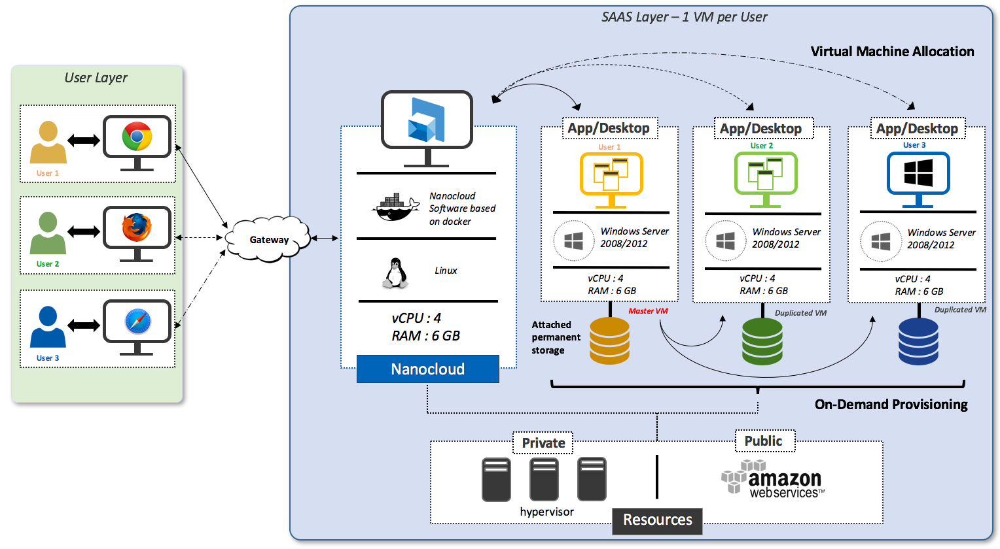The needed resources can be provisioned from a private cloud (based on Openstack) or from Amazon Web services (AWS).
Indeed, Nanocloud Software platform must be understood as a PaaS. It helps you to abstract the IaaS layer. Then, you don’t need any particular skill at the infrastructure low layer since Nanocloud is compatible with any available technology from private clouds or from public clouds.
Login
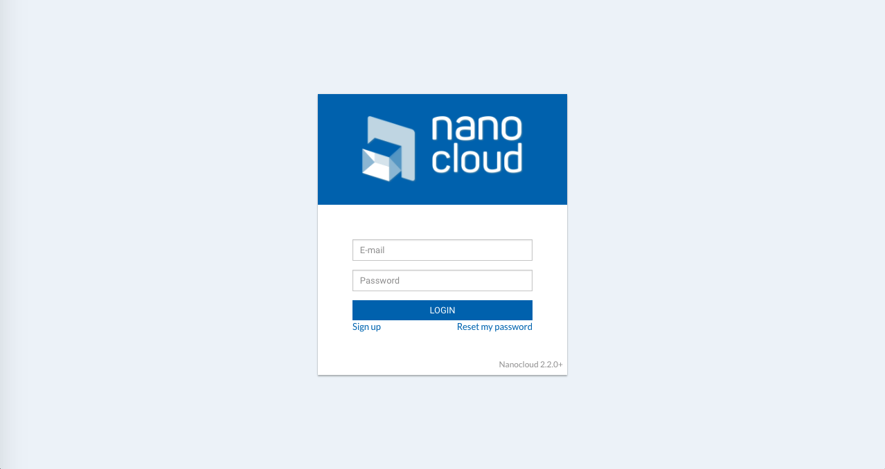
Once Nanocloud Software is installed, you can access it through a web interface. Depending on your installation, Nanocloud web interface is accessible with an URL displayed as:
- a local IP,
- a public IP,
- a domain name.
The default protocol recommended by Nanocloud to access its platform is HTTPS (Secure HTTP).
Depending on your needs, the home page and all the other pages of the web interface can be customized with your enterprise logo or your trademark. Example: if you are a software editor, Nanocloud Software may be provided as a O.E.M. solution for your products with a redesigned interface according to your graphic charter.
Dashboard
Once you have logged in, you can see your dashboard.
On the dashboard are displayed:
- the number of registered users,
- the number of online users (using applications or a VDI),
- the number of published applications,
- the number of machines which are up,
- the number of uploaded files,
- the number of images.
Overview of the Applications tab
The Applications tab displays currently published applications, organized according to the image they belong to.
An image is the snapshot of a virtual environment used in the VDI.
Images in Nanocloud:
- You can publish your applications in several different images, to organize them.
- Your users have access to specific images, in other words, to specific groups of applications.
DESKTOP
The Desktop button is by default in every created image. Il gives access to the VDI.
You can use this button to Launch the Virtual Desktop (VDI) and to Install and publish an application if you are an administrator.
Launch the Virtual Desktop (VDI)
In the Applications tab, click on the Desktop button in the image of your choice.
A files browser opens automatically.
Several buttons are available in the top bar:
- Upload: dropdown menu listing the files uploaded from your local computer to the VDI
- Download: dropdown menu listing the files downloaded in the VDI
- Clipboard: copy/paste interface
- Save an image: to save an image of the VDI
- Onboard an application: to publish an application
- Disconnect: to disconnect from your Windows session
- Home: to redirect you to the main portal while keeping your VDI session open in the background
If you are a regular user, you will not be able to use the following buttons:
- Save an image,
- Onboard an application.
Copy and Paste
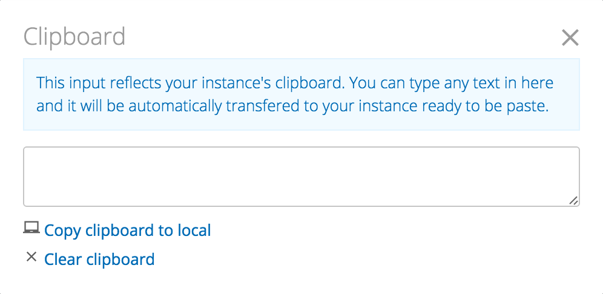A copy and paste interface is available through the icon to exchange text from your local computer to the VDI, and vice-versa.
To copy and paste text in the VDI:
- Paste the text or write it in the provided area. Your text is automatically available in the VDI.
- Paste your text wherever you want, in the VDI.
To copy text from the VDI to paste it in your local computer:
- Copy the text in your application, or in your VDI.
- Click on to open the copy/paste interface.
- Click on the text " Copy clipboard to local". Your text is now available in your local computer.
- Paste your text wherever you want, in your local computer.
If you are a Mac user, remember that when you are in the VDI, you use a Windows environment. This is why, to copy or paste text, you cannot use the shortcuts cmd+C and cmd+V. Instead, use the Windows shortcuts: ctrl+C to copy and ctrl+V to paste.
If you want to make copy/paste much easier, you can download our Chrome Extension in the Chrome Web Store: Nanocloud VDI Experience. It allows you to copy and paste the traditional way, so you do not have to use the Clipboard interface.
Install and publish an application
- Drag and drop the application installer from your local desktop to the VDI.
- In the VDI, open the Storage network location. Your application installer is inside.
- Install the application.
If you cannot install the application because this message appears in your VDI, it is a permission related problem. However, do not worry, we have a solution! Simply drag and drop your installer from the "Storage" network location to your VDI desktop. You can now install the application!
- Once the application is installed, click Onboard an application to publish it.
- Choose whether you want to save an image of the VDI or not. If you do so, wait a couple of minutes.
- A window appears on the right of the VDI. Browse through the files to find the application you just installed.
- Click the Publish it! button.
You can close the VDI and go back to the web interface. Your application is now listed in the list of applications of the image it belongs to.
Launch an application
To launch a remote application, which means launching directly an application without opening the VDI first, simply click on the application’s name, in the applications list of the image it belongs to.
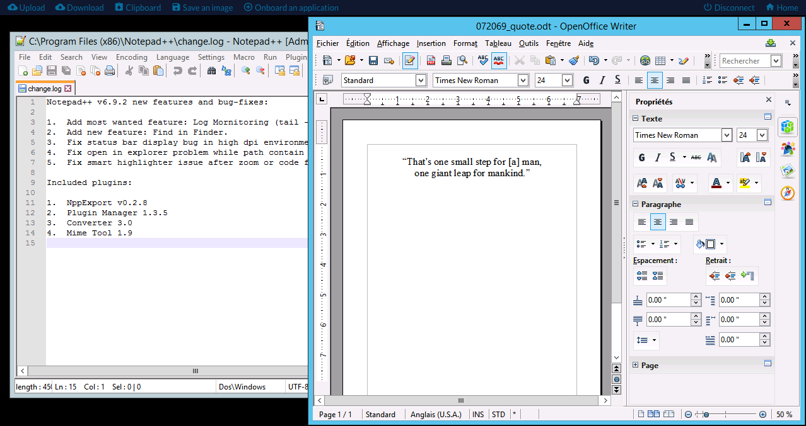Print a document in the VDI
Any document (text file, presentation slides, graphics) edited in your remote application or in your VDI can be printed.
To do so:
- Click the Print button.
- Choose the Nanocloud printer. A PDF file is then downloaded to your browser.
Manage an image
In the Applications tab, click to access the image's information. Each image information page displays:
- the image name,
- the publication date,
- the groups which have access to this image,
- the UUID of the image,
- the pool size of the image,
- the size of the image's instances,
- a button to delete the image.
Rename an image
In some cases, it may be preferable to change the name of an application for your users, to display it in a more explicit way or to give the version of the software. As for images, it really is recommended to give them a proper, explicit name.
- Click to enter in edition mode.
- Rename the application or the image in the provided area.
- Click to validate your change.
Change the pool size
- In the Pool size section, click to enter the edition mode.
- In the provided area, enter the size you want the pool of the image to be.
- Click to validate your change.
Change the instances size
Although the default instances size for all the images is managed in the Configuration tab, you can specifically change the instances size for each image.
To do so, in the Instances size section, you just have to check the size of your choice, between Small, Medium, Large and Very large. Your change is automatically taken into account.
Delete an image
- Click the Delete this image button.
- Enter the name of the image to confirm its deletion.
- Click on the Delete image button.
Manage an application
In the Applications tab, click to access the application's information. Each application information page displays:
- the application name,
- the publication date,
- the image the application belongs to,
- the UUID of the application,
- a button to delete the application.
Rename an application
In some cases, it may be preferable to change the name of an application for your users, to display it in a more explicit way or to give the version of the software.
- Click to enter in edition mode.u want to rename).
- Rename the application in the provided area.
- Click to validate your change.
Delete an application
- Click the Delete this application button.
- Enter the name of the application to confirm its deletion.
- Click on the Delete application button.
Overview of the Files tab
The Files tab displays the list of the uploaded files.
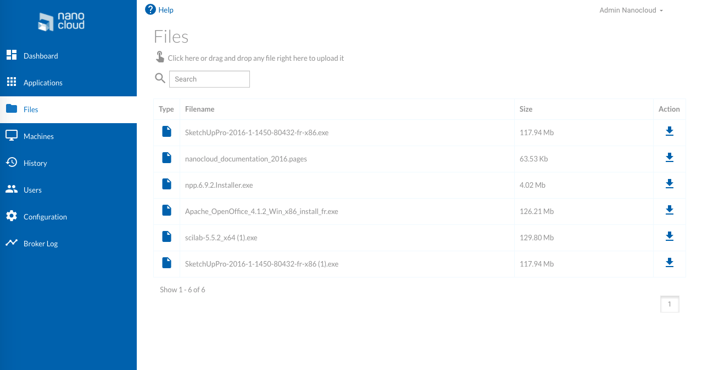Manage files in the VDI
In the VDI, several options are available to manage files.
From the top bar in the VDI, you can:
- use to see the files uploaded from your local computer to the VDI

- use to see the files downloaded in the VDI, and download them in your local computer by clicking :fa-download:

You can drag and drop any of your local files in the VDI, to upload it into the VDI.
Manage files in web interface
Upload a file
Once you are in the Files tab, you can upload a file in two different ways.
Through the files browser
- Click the link on the text "You can upload a file with drag and drop!". The files browser opens.
- Browse through your files to choose the one you want to upload.
- Click the Open button.
Drag and Drop
You simply have to drag and drop a file into the interface.
A “Storage” network location is created for any user, including the administrator, in the VDI. All the files listed in the “Files” tab are located in this network location. If you want to download any file from your VDI in the cloud, just put it in Storage, when you are in your VDI.
Download a file
- In the files list, choose the file you want to download.
- Click .
Overview of the Machines tab
The Machines lists and gives information on the virtual machines that are available to host your applications. The VMs, which are application servers, can be hosted in a public cloud or within your infrastructure.
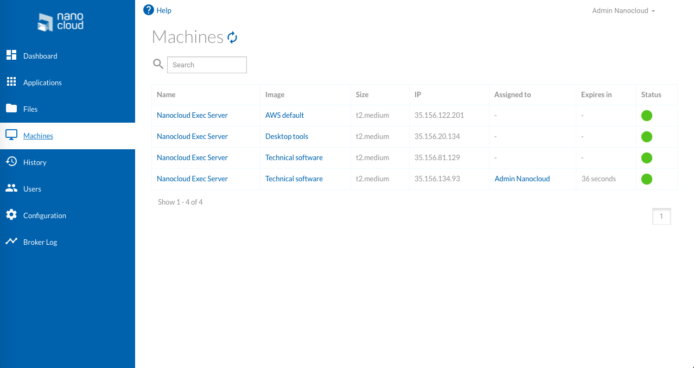Machine status
The dots in the "Status" column of the table indicate the connection status of the machines.
- Green dot: the VM is currently running.
- Orange dot: the VM is booting.
Access the information of the Machine
Click the name of the machine to access its information:
- IP
- Image
- Driver: driver detected, depending on the Cloud platform you use
- Machine size
- Assigned user: user assigned to the machine
You can also click on the Reboot button to reboot the machine, in case there is any problem.
Overview of the History tab
The History tab records all sessions, for every user.
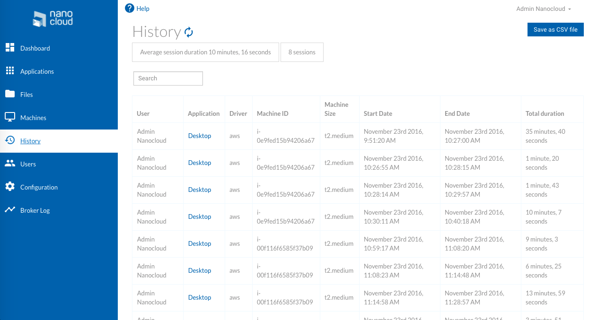The history gives several other information:
- User who launched the session
- Application launched
- Driver
- Machine ID
- Size of the Machine
- Start date of each session
- End date of each session
- Total duration of the session
You can also see how long is the average duration of the session and the total number of sessions.
You can download the entire history record, in a CSV format. Click the "Save as CSV file" button to download it.
Overview of the Users tab
The Users tab is composed of three different sub-tabs: Users, Groups and Teams (which is optional).
Users
In the Users tab, you can create, edit and delete a user.
The Users tab displays the list of registered users, including the administrators.
For each registered user, the information below are listed:
- Name: first name and last name
- Email: which is also the ID to login
- Type of user: Administrator or Regular user
- Connection status: the dot is grey when the user does not use a VM at the moment, and green when the user uses a VM
- (optional) Team: name of the team the user belongs to
Groups
In the Groups tab, you can create groups, add and remove applications from groups, add and remove groups members, and also delete groups.
The Groups tab displays the list of users groups, as well as:
- the number of users in the group
- the number of images available for this group
Groups are intended to manage the users rights to access applications. You can create a pool of applications only available for a given set of users.
Example: you can create a group for developers, a group for current users, a group for sales demonstrations and a group for customers or for partners. The possibilities are endless!
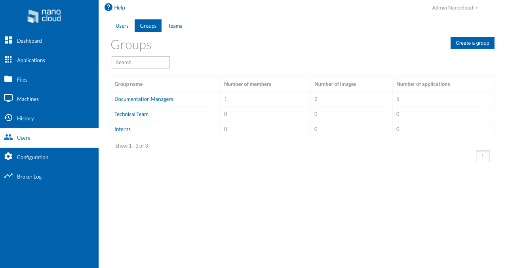Teams
You can activate or deactivate this feature in the User rights section of the Configuration tab.
In the Teams tab, you can create and manage teams and manage a team's files.
How teams function on Nanocloud is very simple.
Any user can create a team and add members to this team. Then, from the VDI, the members of the same team will be able to share files that them only will view and manage.
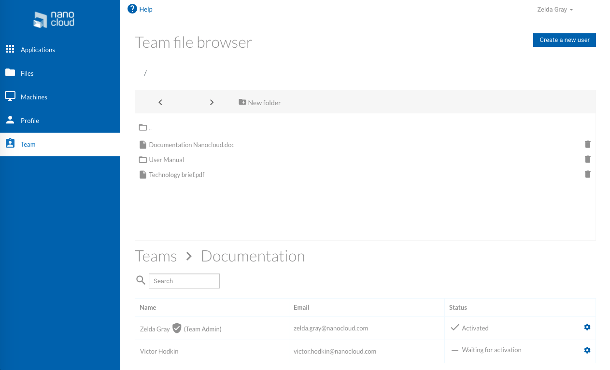Create a new user
- In the Users tab, click on Add user.
- Fill in all the fields of the form.
- Click on create.
Security policy of the Nanocloud platform requires at least 8 characters for any new password.
The new user is now listed in the list of users.
Modify the user's information
This page guides you to change the name, email address or password of a user.
Modify the first or last name of a user
- In the list of users, click the name of the user you want to edit.
- Click next to the first or last name of the user. You enter in edition mode.
- Modify the user's first or last name.
- Click to validate your changes.
Modify the email address of a user
- In the list of users, click the name of the user you want to edit.
- Click next to the email address of the user. You enter in edition mode.
- Modify the user's email address.
- Click to validate your changes.
Modify the password of a user
- In the list of users, click the name of the user you want to edit.
- Click on the right of the user's current password. You enter in edition mode.
- Enter the new password twice.
- Click to validate your changes.
Modify the expiration date of a user
- In the list of users, click the name of the user you want to edit.
- Click next to the current expiration date. You enter in edition mode.
- Enter the number of remaining days before the account expires.
- Click to validate your changes.
Modify the status of a user
You can change the status of a user to make the user an administrator or on the contrary, to make an administrator become a regular user.
- In the list of users, click the name of the user you want to edit.
- Tick or untick the "Is admin" box.
Delete a user
- In the list of users, click the name of the user you want to delete.
- Click the Delete this account button.
- Answer to a Yes/No question to confirm the deletion of your user.
Create a new group
- In the Groups tab, click on Create a group.
- Enter a name for your new group.
- Click on the Create button.

The new group is now displayed in the Groups list. However, it has no applications and no members yet.
Manage group members
Add a member to a group
- In the Groups tab, click on the name of the group you want to add a member to.
- Click on the Members tab to manage users.
- Click on + next to the name of the user you want to add to the group.
Remove a member from a group
- In the Groups tab, click on the name of the group you want to remove a member from.
- Click on the Members tab to manage users.
- Click on the check sign next to the name of the user you want to remove from the group.
Manage images in groups
Add an image to a group
- In the Groups tab, click on the name of the group you want to add an image to.
- Click on the Images tab to manage applications.
- Click on + next to the name of the image you want to add to the group.
- You can also deselect some applications from the image if you do not want your users to access them.
Remove an image from a group
- In the Groups tab, click on the name of the group you want to remove an image from.
- Click on the Images tab to manage images.
- Click on the check sign next to the name of the image you want to remove from the group.
Delete a group
If a group is no more needed, or if it is easier to create a new one instead of editing an existing one, you can simply delete it.
- In the Groups tab, click the name of the group you want to delete.
- Click the Delete this group button.
- Enter the name of the group to confirm its deletion.
- Click on the Delete group button.
The group is not listed in the groups list anymore.
Rename a group
- In the Groups tab, click the name of the group you want to rename.
- Enter the new name of the group.
- Click on the Rename button.
Create a team
Create a team
- In the Teams tab, enter the name of your team in the provided area.
- Click on the Create button.
Once the user has created a team, it cannot be deleted, and no other team can be created by the same user.
Add members to a team
You can now add members to your team.
- Click on Create a new user.
- Fill in all the fields of the form.
- Click on Create.
The users you add in your team automatically receive an email to confirm the creation of their account.
Manage a team's files
In the Team files section, you can view all the files shared between the different members of the team you administrate and/or belong to.
You can also organize and navigate through your files:
- Click on New folder to create a folder.
- Click on and :fa-chevron-right: to navigate through your folders and files.
- Click on to rename your files.
- Move your files with a simple drag-and-drop.
Overview of the Profile tab
The Profile tab lists your account's information:
- First name
- Last name
- Email address
- Password
- Group you belong to
- Expiration date of the account (optional)
- Amount of credits used (optional)
- Date of the creation of the account
This tab allows you to modify your name, email address and password.
Modify your account's information
This page guides you to change your name, email address or password, as a user.
Modify your first or last name
- Click . You enter in edition mode.
- Modify your first or last name.
- Click to validate your changes.
Modify your email address
- Click . You enter in edition mode.
- Update your email address.
- Click to validate your changes.
Modify your password
- Click . You enter in edition mode.
- Modify your password.
- Click to validate your changes.
Overview of the Configuration tab
The Configuration tab allows you to configure sessions, user rights, emails, the Look and Feel, LDAP and other settings such as the platform host.
Configure sessions
In the Session tab, you can configure:
- after how long the session must expire
- the default machine pool size
- the default machine size
For each of these settings:
- Edit by simply replacing the information by the new setting.
- Click to validate your changes.
As for the default machine size, you just have to tick the size of your choice, between Small, Medium, Large and Very large. Your changes are automatically taken into account.
Note that in the Session configuration area, you choose the default pool size and machine size, which means that the values will apply by default to every new machine per image. However, you can change these values for one particular image, as it is explained in this section of the documentation.
Configure user rights
In the User rights tab, you can:
- decide whether the user can register himself or not, and select a default group and an expiration date for the new users
- decide whether you automatically log off after closing the VDI or not
- set a credit limit to users using AWS
- enable the creation of teams
Registration, default group and expiration date
In the User rights tab, tick or untick the box next to "User can register himself" to decide if users can register themselves.
DEFAULT GROUP
If users can register themselves, you can choose a default group. All new users who registered themselves will then automatically join the default group.
To do so, click on the name of the group to make it the default one.
Your changes are automatically taken into account.
EXPIRATION DATE
You can also enter an expiration date which will apply to all new users who registered themselves.
- Enter the number of days you want the new users to have access to Nanocloud Software.
- Click to validate your changes.
Your changes are automatically taken into account.
Logoff after closing the VDI
When you are in the VDI, on the right of the top bar, you have two buttons:
- to disconnect from your Windows session
- to redirect you to the main portal while keeping your VDI session open in the background
If you tick the "Logoff after closing VDI" box, the button will not be available anymore. Users will only have the possibility to disconnect from the Windows session everytime they close the VDI.
Computation credits
You can set usage limits for the users, for example to be able to set trial periods or to limit resources consumption.
How computation credits work on Nanocloud is easy: the users will not be able to exceed a number of computation credits per month. When the threshold is reached, the user cannot launch an application anymore, until the end of the month.
You just have to enter your chosen amount of credits limits in the provided area, and it will apply to all users.
Enable teams
For any member to be able to create teams, you just have to tick or untick Enable team.
Configure emails
Settings
When a user registers him/herself, an email is automatically sent to him/her.
As part of this email, you can configure:
- Server host
- Server port
- Login
- Password
- Email address the email will be sent from
For each of these settings:
- Edit by simply replacing the information by the new setting.
- Click to validate your changes.
Emails templates
In the "Email configuration" tab, you can also define a template for automatically sent emails. These automatic emails are sent in two different situations:
- when a user registers him/herself (Signup template)
- when a user resets his/her password (Reset password template)
To define your email templates, you just have to write the content of these emails in the provided area. Once you are done, click the Update button.
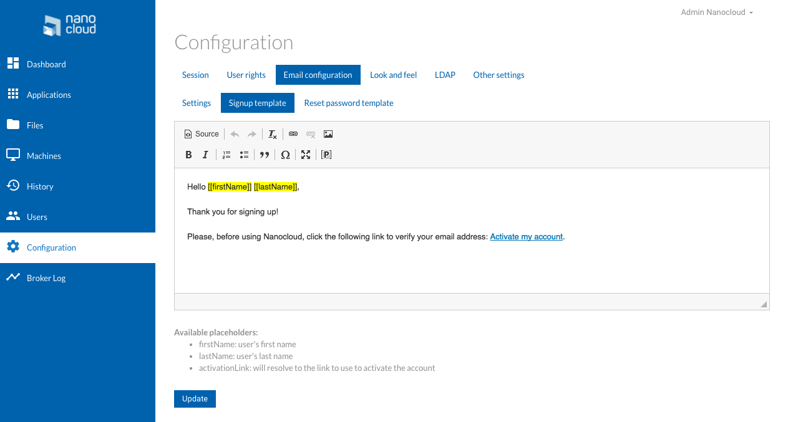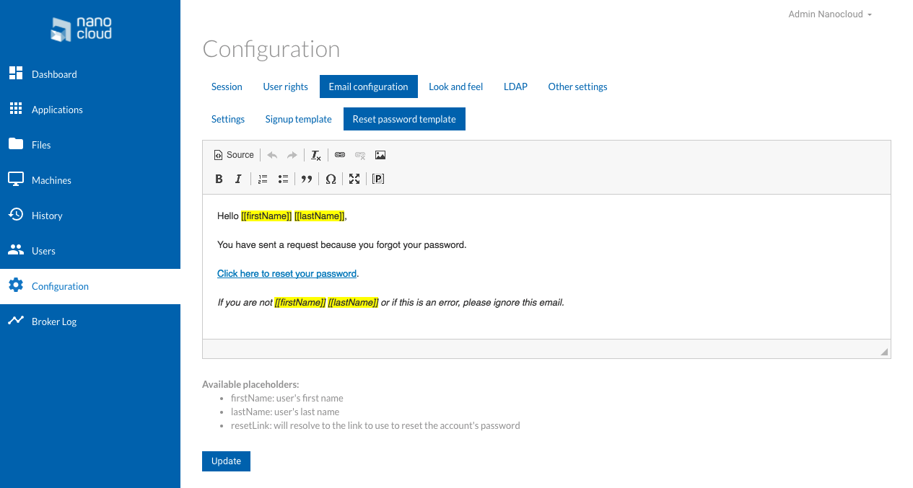Configure Look and Feel
In the Look and feel tab, you can configure:
- a title for the web page
- the favicon's path
- the logo's path, with your the URL of your logo, which must be publicly available
- the color chosen for the main menu
For each of these settings:
- Edit by simply replacing the information by the new setting.
- Click to validate your changes.
Configure LDAP
In the LDAP tab, you can activate users authentication against LDAP. In other words, if you activate this option, users will not have to register one by one: if they are identified in their company's Active Directory, they will automatically have access to Nanocloud.
To activate this option:
- Tick the Activate authentication against LDAP box.
- Enter the LDAP URL.
- Enter the base DN.
- (optional) Select a default group for LDAP users.
Please note that for LDAP users, their personal information displayed in Nanocloud are read-only. The administrator nor the user can modify these information, because they are in the Active Directory of the company, not saved in Nanocloud.
Other settings
In the Other settings tab, you can:
- configure the host
- change the machines name
For each of these settings:
- Edit by simply replacing the information by the new setting.
- Click to validate your changes.
Photon
You can also activate Photon, which is a high performance remote application streaming engine.
This feature is still experimental and has a few limitations for its users:
- It is only available for users of Nanocloud on AWS.
- You cannot use the Clipboard for copy and paste in the VDI.
- You cannot print anything via the VDI.
- There is no auto-scaling when you resize the window while using the VDI.
Also, note that for now, Photon is less performant when it comes to latency, however, it offers better performances for applications requiring a lot of reactivity and resources.
To activate Photon, simple tick Activate Photon.
You might even be one of the first Photon users: thank you for supporting this new feature!
Overview of the Broker log tab
The Broker log tab records the activity of all the VMs.
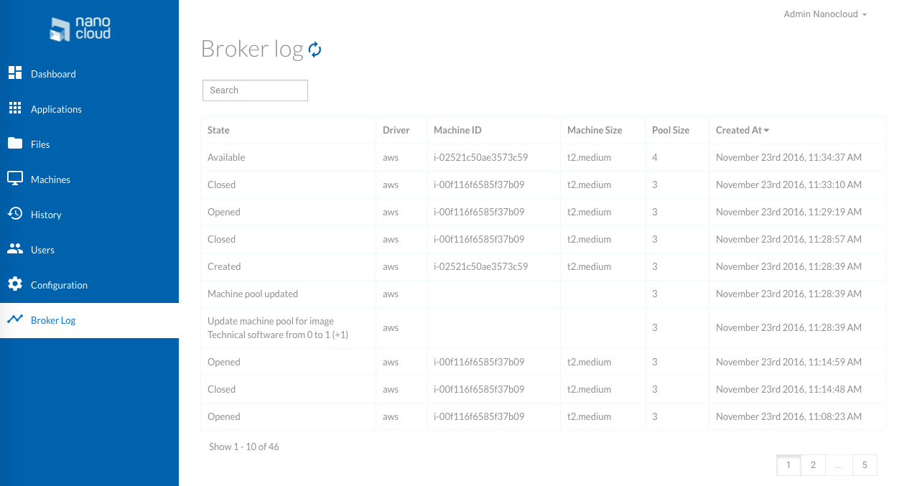This broker log history gives several pieces of information:
- State of the VM
- Driver used
- Machine ID
- Machine size
- Pool size
- Creation date of the VM